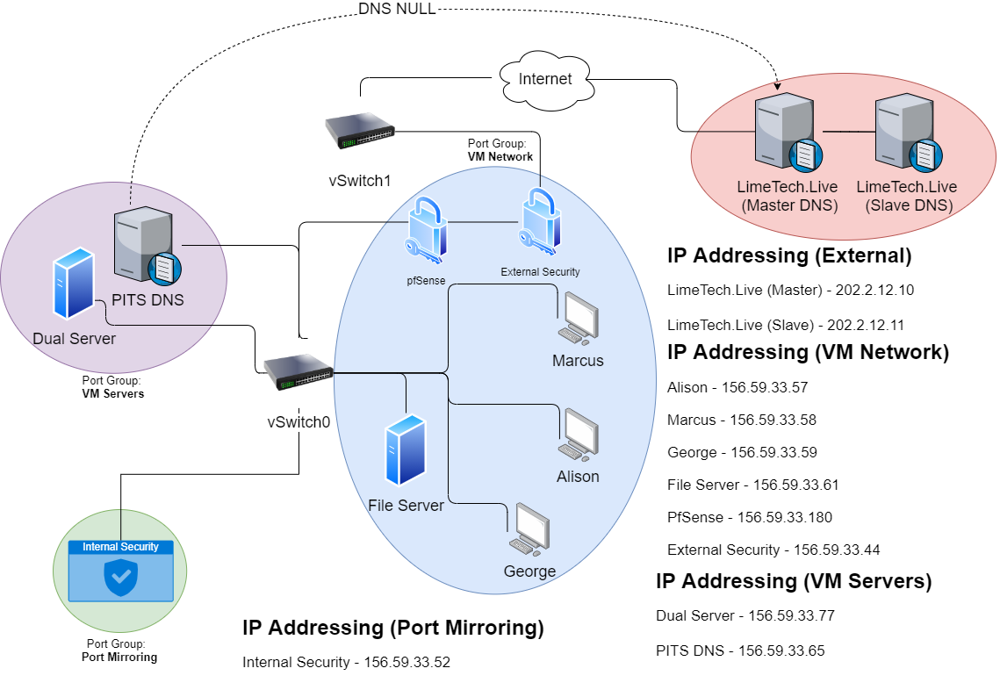

TOPOLOGY

For the topology, an understandable map involving all required virtual machines had to be designed to guide how a believable and secure environment would be created.
The topology diagram created to navigate environment implementation is shown above. For network segmentation, port groups were created to allocate VMs to, which essentiallly acted like subnets.
Security systems were then set up to operate both internally and externally so that threats could be addressed inside and outside of the network. A large part of the environment design was having strong defensive measures like this in place to showcase just how they could be bypassed by the right attack and the right attacker, which is the risk real companies must work to mitigate today.
To capture all of the events that took place during the attack, the internal security box was separated in a group with a mirrored port. Because the sccenario involved exfiltration to a third-party, an external network was required as well as an internal one. As shown above, the topology also included the external devices in that network and their details.